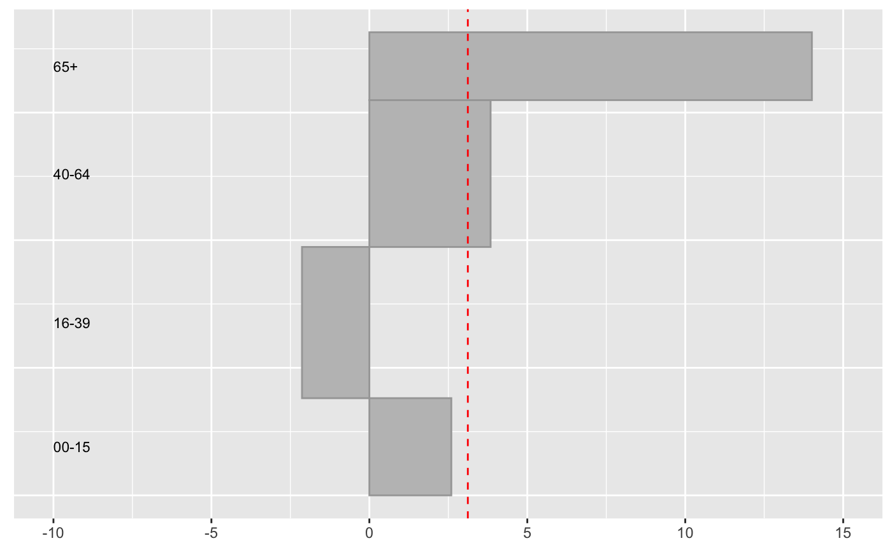

UpAndDown plots display percentage changes by height and absolute changes by area for up to three hierarchical levels. They can visualise changes in indices, showing how the changes for sectors or for individual components contribute to the overall change.
The Northern Ireland population grew by 3.12% between 2011 and 2017. What were the changes by the four age groups reported?
library(UpAndDownPlots)
popx <- ud_prep(NIpop, v1="y2011", v2="y2017", levs=c("age"), sortLev=c("orig"))
p1 <- ud_plot(popx, labelvar="age")
p1$uadl
The 65+ age group increased by almost 20% and the 16-39 group actually declined. It is useful to note that the older group were less than half of the size of the 16-39 group in 2011.
There are more examples in the package vignettes.